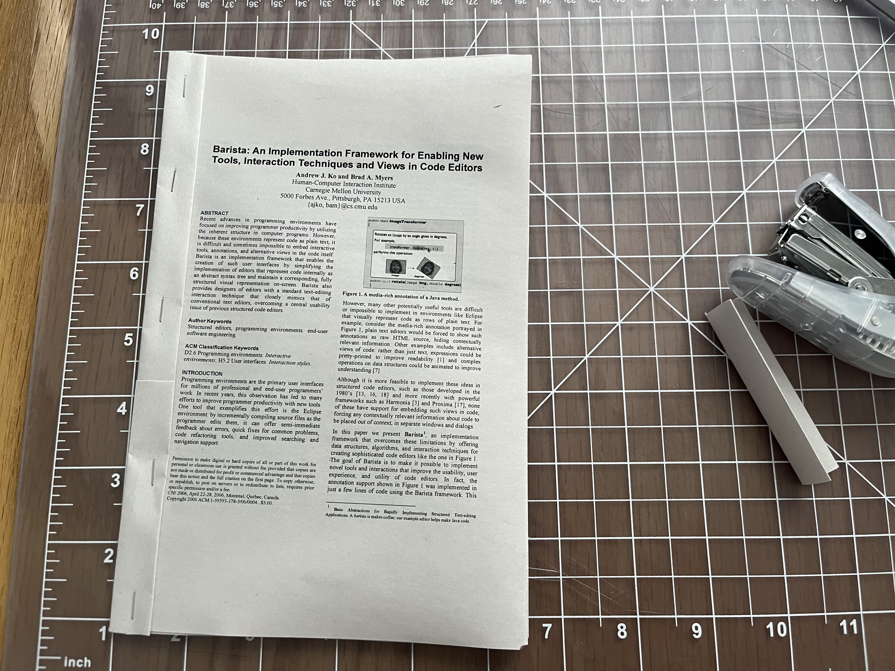
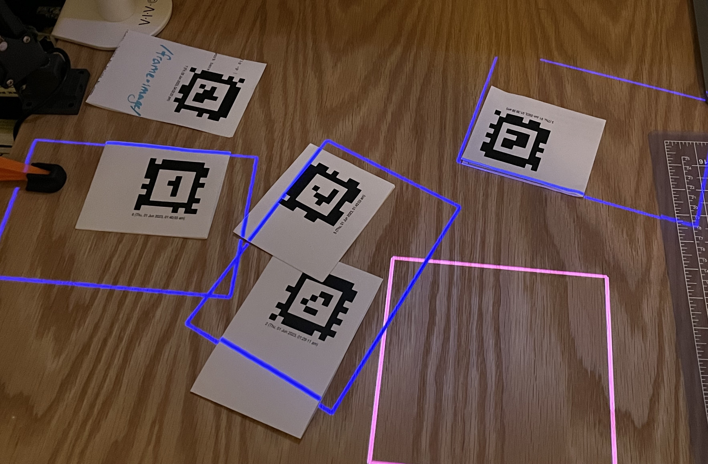
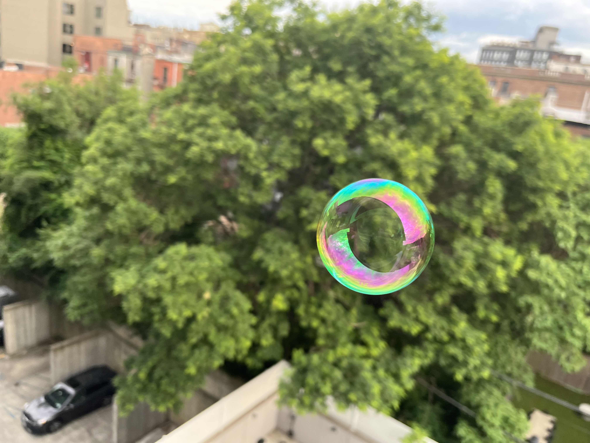
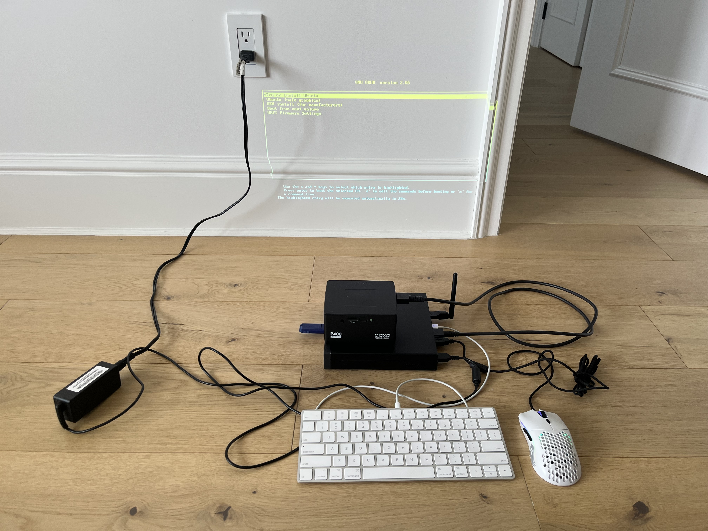
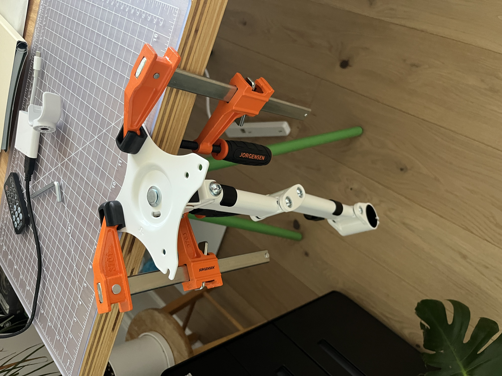
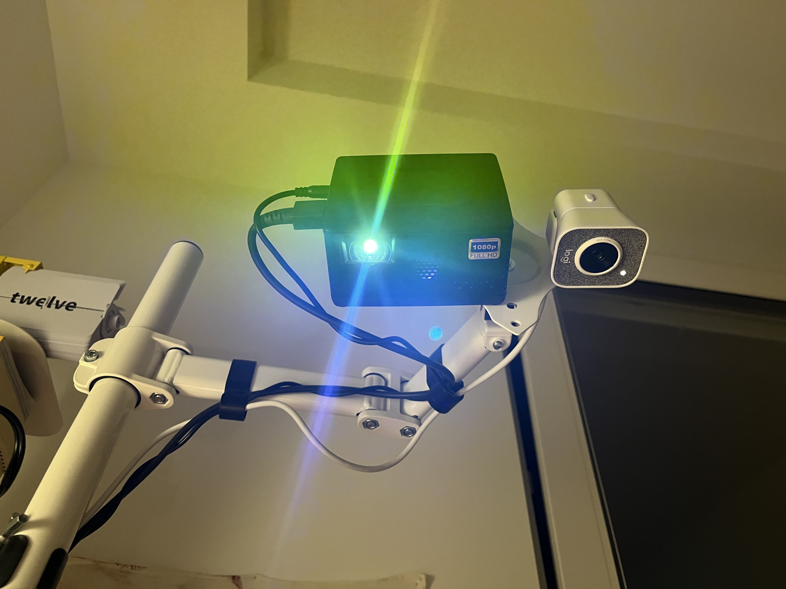
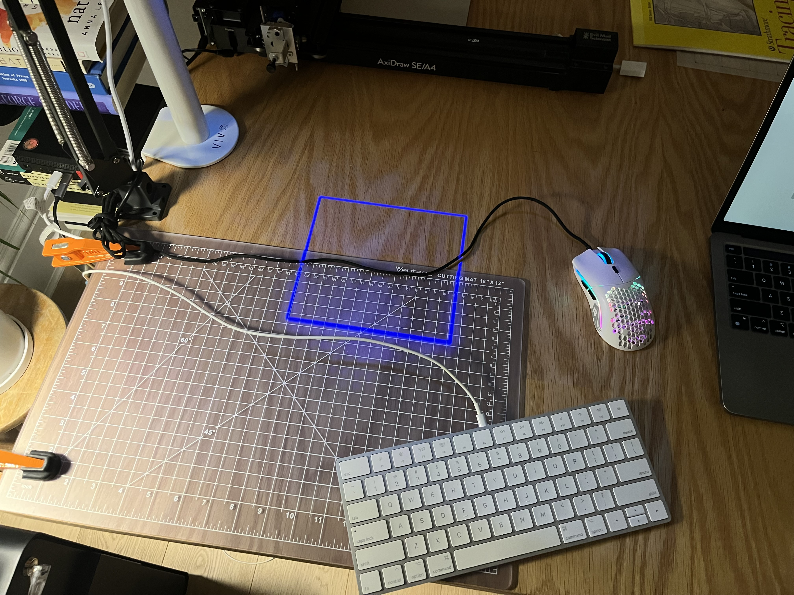

Welcome! This is a place for me to publish less polished thoughts and findings as they come up, research-related or otherwise. See #motivation for details.
I read a great paper today! How Bodies Matter: Five Themes for Interaction Design It’s very much in line with the work we’ve been doing at Folk, giving structure and words to the motivation for the infusion of the physical world with computation and vice versa.
There’s a section therein that I wanted to speak to: “Risk”. The authors make the very insightful point that real world interfaces often have more risk associated with them: once you make a action there is no way to un-make that action. Virtual interfaces on the other hand often try to enable free history traversal. This risky commitment to action or lack thereof can profoundly impact the attitude of the actor:
Situations of higher risk cause people to feel more emotionally negative and, therefore, more focused, paying closer attention to detail, while situations of low risk allow people to feel more emotionally positive, relaxed, curious, and creative.
It’s valuable to think about what we give up when we move to a risk-free way of interacting with the world. There are probably circumstances where it’s valuable to build and use tools that embrace this sort of focus-inducing risk.
However I try to encourage and embrace emotionally positive, curious, and creative mindsets with the tools that I build. This is one of the reasons I love technology: it has the potential to induce these mindsets. Reading this paper, you might think that moving more to the physical world might necessitate taking on more risk in your actions and therefore encounter less coziness in more physically-centered tools. But I have found the opposite to be true:
I had an idea for a blog post recently. Instead of trying to formalize an argument for these sorts of physical computing interfaces I’ve been exploring, I could write a post arguing against this kind of theory. That is, trying to outline a generally good-faith position that humans are very good at symbolic processing and thus traditional coding interfaces are superior, that the keyboard and multi-button mouse paradigm is a highly efficient interface far surpassing anything that can be done on a tabletop, etc.
This would be an interesting position to try to elucidate— I’m sure I would develop a more nuanced outlook in the process— but I am also hoping that it would incite from the reader feirce critique against it and in favor of physical computing. People love being contrarians (myself included for sure) and this might just be the way to get them to join the cause.
I’ve taken to printing out papers recently on physical paper. I’ve been using newsprint - a somewhat silkier paper that actually seems to hold up better under stress. I print out 2 pages per sheet, double-sided, and then fold and staple them into pamphlets ready to be grabbed on my way out the door. This makes for great subway reading! Photo here:

I really can’t recommend this highly enough. It’s such a nicer physical reading experience. It’s creatively satisfying to produce a history of artifacts of my research. I even printed out a book this way (from a pdf available online), saving $30 plus shipping charges. Letting ourselves a moment of romance, we can glimpse into a society of widespread indie book production! Basically printing is 3d printing for books? Who’d’ve thought.
Today was a nice day of calm focus and research.
I am trying to learn more about electronics. My last project involed a raspberry pi zero and an oled display that got soldered on poorly, so today I purchased a solder sucker and two microcontrollers. I have a lot of ideas — suprisingly many are time-related? desk clock, watch, physical timer, etc.
This sort of making is very motivating to me. I’m not sure if it’s art or what, but the simple joy of practicing my own agency through creation and learning in the process is just so wonderful. I’m not sure where it’ll take me this time, but I’m leaning into it. Hopefully somewhere interesting!
(In that vein, I found this talk by Chia to be very inspiring.)
I also applied to work as a teacher at a Brooklyn coding school today. I’ve been reading a lot of education theory lately and am hoping to see what it’s like to work with children directly. I’m guessing it’d be super informative.
I also stumbled across what struck me as a lovely interactive piece of art today. It’s a demo for accessing the webcam with rust in the browser that just so happens to pixelate in a beautiful way. I had a lot of fun dancing in front of the camera, enjoying an interactive control of the light on the screen. Here’s an example of w is what it looks like (having tea at the time):
I enjoyed this so much that I hosted a static version for y’alls enjoyment: blocky.inclouds.space
It’s just a static site right now but I’m imagining a social network full of people sharing small blocky clips! There seems to be a web api to create video in the brower but it’s not supported by Firefox so I’m afraid that dream will have to wait. Though I might be able to record an html element to create a vidoe?
Or maybe it could be fun to have a dedicated device (microcontroller + camera + display) in my house like this? Could be a nice artwork!
Anyways that’s all for today! 💻✨
P.S. I also came across Clement Zheng’s work on the Folk discord and it so very cool on so many axes.
Well last weekend was very fun! I completely revamped my editor setup - switching to neovim with only lua plugins. I’m extremely impressed by the quality of this ecosystem. Especially compared to the vimscript ecosystem, I’ve had far fewer bugs, plugins conflicting with each other, latency issues, etc. Plus the plugins don’t seem to be bloated and the start times are good! This has all happened just in the last couple of years! Well done lua vimmers. Thank you.
I’m curious how my software-building desires will change now that I have an editor I like. I’ve been leaning heavily towards the ‘build the whole editor up from scratch’ route. I could see myself doing some more neovim integrations instead in the future?
I’ve been helping Andrés and Omar improve the folk system. We’ve made a lot of progress even if it’s a bit slow! I’m optimistic. There’s a lot of work that goes into real-time tracking. Most of the work has been on camera-projector calibration and performance. The faster the system and the better-calibrated is the more real it is. The illusion holds. And more: the idea communicates. People can start to understand the power of this kind of system. But yeah, it’s a lot of systems programming and debugging.
There are some fun routes I’m exploring around physical interfaces to computers:
I just ordered a monocle, a small AR device that clips onto a camera frame. It’s essentially a tiny oled display + a prism + a camera + two touch sensors + a bluetooth chip + an FPGA + a battery + a clip. What a bundle!
Basically this lets you augment a very small rectangle in your vision: drawing some graphics or writing some text. It seems like the software is very much a work in progress. I’m not sure extent I’ll be able to do with it, but I’m looking forward to finding out!
I also bought some magnetic sheets from Amazon yesterday. They are adhesive on one side so my plan is to print out some words on paper, stick on the magnetic sheets, and then cut out the words. Much like the refrigerator magnet poetry of my youth! But this time it’ll be Logo commands with camera recognition. That’s right! Stay tuned.
The projector film arrived a couple days ago! I tested it out with the folk system a bit, by placing a projector on the table pointing at me and positioning a sheet of glass with the film between me and the table. It’s pretty interesting!
Basically: it’s a transparent display! There are some air bubbles but I would probably call that user error than anything else. Most of the films are quite blurry at distances > a few inches. One of them — the most transparent — seems like it might be better in this regard.
What does this give you over just projecting onto a desk from above? That’s the question I’m hoping to answer, I guess. I think the biggest answer so far is that you don’t have to worry about the topology of what you’re projecting on: the screen is flat and anything drawn to it will appear un-distorted above the objects on the table.
I’ll get some photos and videos of it up on this page sometime soon.
Update time!
I’ve had a performance regression on my folk system, with the frame rate dropping to something like 10. It’s preventing me from experimenting with higher level applications, since the kind of interaction that I was showing in my last post is just terrible at 10fps. In the process of debugging!
I’ve also been helping out to improve the calibration in Folk. One problem that you get in projector-camera mapping systems like this is you often want to project a graphic relative to something that the camera sees. But you don’t know a priori where the projector can project in terms of the camera. Hence, projector-camera calibration: the process of mapping camera coordinates to projector coordinates.
The way this works in Folk is it lights up each pixel of the projector uniquely, paying close attention with the camera. But some pixels from the projector don’t get seen by the camera, so it picks just 4 points that are and then comes up with a linear map using those 4 points between the projector space and the camera space. Unfortunately this linear map doesn’t work so well because the distortion within the camera and projector isn’t linear: there is radial distortion in their lenses that aren’t taken into account. So we’ve been working on coming up with a mapping that does take into account radial disortion. And even more fun we’re working on mapping into 3d coordinates as well. Since we know the physical size the April tags, we can infer how high up they are in space. More accurate and 3-dimensional calibration will let folk precisily project onto various portions of a page, even when it’s being held and moved around in space. Very exciting!
I did write one higher-level primitive in folk: an “operator” card. Basically, you can declare a card is an operator and then it’ll get information about which cards are to the immediate left or right of it. So you can have behaviour defined by putting three cards down in an order. I’m planning on using this for doing a vector addition demo in folk!
Also and unrelated: I’ve been thinking about “societal attention”. There’s this concept we have of individual, human attention. Something gets brought up in an individual’s consciousness, and then they spend time thinking about that thing. Those initial thoughts might lead to more thoughts and, well, this is the process of paying attenion and thinking about something.
So I think there is an analogous phenomenon in human societes: something happens and whole groups of people end up thinking about it. They think some thoughts, share them around, prompting more thoughts. My insight here is that societies can kind of get “lost in thought” the same way humans can: they can spend their time thinking and talking about something, even if it doesn’t end up being useful or even if the original bits of information that sparked the discussion were incorrect or mistaken.
Maybe it’s worthwhile thinking about how we could short-circuit these kinds of conversations once it’s clear (to whom?) that they are no longer productive? Maybe it just takes a lot of individuals carefully doing that in their own thinking processes?
I got the projector films in the mail! I put them onto some glass and put the glass in front of a projector, basically making a transparent display. Pretty decent? It’s a bit unclear what the possible applications would be. I’ll try to talk more about it in the future and share some links/photos in case anyone else wants to try.
I wrote my first meaningful folk program! Its goal is to prove Thales’ theorem by letting people interact with the pieces. Thale’s theorem states that any triangle whose corners lie on the circumference of a circle and whose hypotenuse is the diameter of the circle is a right triangle. See for yourself:
Smoke and (AR) mirrors in New York City.
I’m happy to see a hype shift towards more HCI-related topics and away from all AI all the time. AR relates more to my interests and, while surely it has some distopian futures embedded in the discourse, it’s at least not entirely centered around them.
A quick note on hype: I think people lose their minds when it comes
to new technology. New tech is cool and fun and often genuinely
transformative! But at any given time period those transformations are
finite. Some things change, some things don’t. And we are bad at knowing
what will and won’t change n months out. I try to be
careful of claims with absolute certainty. We all need some humility in
times like these.
Anyways!
Apple’s headset is cool — especially the eye tracking! We’ve never seen it in mainstream tech hardware before. I’m really excited for the possibilities. Though I don’t think I’ll rush to build an app for it. I’m much more excited about projectors! The ability for tech to actually augment the world without taking away my ability to engage with the people therein. So important!
This brings me to Folk. I’ve been volunteering a little with the team, getting a home instance set up, and it’s finally working!
I also spent a good amount of time researching in-air (transparent) displays. Been thinking about how to create a folk-like experience by positioning one between the table and my head, using cameras for head-tracking.
There are two ways I was thinking of doing this:
Turns out that LCDs are quite dark even with the backing peeled off and need a backlight to really shine, making projection still the way to go.
So I got some samples of the film shipped to me, bought a glass panel, some brass rods, and another ikea task lamp! Maybe this will turn into something cool!
Some highlights from the past few days:
cd there
first. It feels like this should be a built-in utility! Like how you can
set an environment variable with env THIS=THAT. So I made
it! It lets you
exec-in a-directory your-executable your-arguments.
Worked great! Maybe there’s something else that does it? It was kind of
fun to write — I wrote the bash first and then asked an LLM to convert
it to C for me. github---
Update: Got calibration working and so the rectangles are now following the april tags! The automatic calibration still isn’t quite working, I had to manually feed in some of the points that it came up with. And as you can see the calibration isn’t that good. But it’s a starting point!

Also, bubble:

An awesome day. It started out by installing ubuntu on a small desktop computer:

And then progressed to drilling holes into a vesa mount of a monitor arm:

Which let me position a webcam and projector in the air:

To finally project a blue square on my desk:

And what a blue square it is!
There were too many issues to count along the way. The computer I got ended up not having a wifi card built in but it did come with a usb wifi adapter. I spent altogether too much time manually downloading the debian packages needed to compile this adapter’s firmware only to find out that it wasn’t compatible with the latest linux kernel version. So I’m getting a new wifi adapter shipped, but in the meantime I went to the store to buy an ethernet cable. This got me started but it wouldn’t reach to the right desk, so I have ended up tethering my phone’s hotspot through a usb connection. Which of course lead to more issues. My printer is configured to work on my home network which this desktop computer doesn’t have access to (since it doesn’t have a wifi card), so printing out four April tags involved alternating between my phone’s hotspot to get a single print job queued and then my home network to actually print it. A wild ride for sure!
But it should all be worth it soon.
I’m in the process of setting up a folk.computer installation! Today involved running to the hardware store to buy clamps, eyewear, power strip, flash drive, etc. Tonight or tomorrow I’ll start drilling: have to widen the holes in a monitor arm’s VESA mount to let through the 1/4” 20 screws that the projector and webcam use. I’m hoping that the end result will be pretty clean!
Folk is a projector-camera “physical computing” interface and operating system developed by Andrés and Omar. The idea is you position a camera and a projector above your desk and plug them into a computer with access to a printer. This setup lets you:
I’m extremely excited about this. Last week I witnessed a musical performance where someone with no particular training manipulated 5 pieces of paper to create a musical experience. This is how we seamlessly empower non-technical humans with technology: extraordinarily easy, high-bandwidth interfaces you can play with.
Stay posted.
I added links on each header here! Had to use pandoc’s gfm_auto_identifiers extension and then used a lua filter to add the actual links to the header. This was an updated version of the filter pandoc uses for its own documentation.
function Header(h)
if h.identifier ~= '' then
local anchor_link = pandoc.Link(
h.content, -- content
'#' .. h.identifier, -- href
'', -- title
{ class = 'header-anchor' } -- attributes
)
h.content = anchor_link
return h
end
endI’ve added an RSS feed for these notes! I’m using pandoc to render a single markdown file into html, so had to figure out some way to get an rss feed as well. I went with a ruby script to parse the markdown and generate the xml on build. Turned out to be easier than I was expecting!
See the feed here: ./rss.xml
Well I’ve been doing some long-form writing on my blog and I’ve enjoyed it. But the format necessitates a lot of editing and care, at least in my mind. This can be good for me—practicing writing long form pieces and the editing that goes with that—but it’s not easy and often either prevents me from getting content out or seriously delays it. I’d like to be able to share spur of the moment insights and snippets easily and quickly, in the hopes that I end up getting a larger amount of content out and in public. That too is good practice!
So please bear with me; thoughts might not be as fully-formed, spelling might not be well-checked, grammar will be okay at best. This is an experiment! I’m hoping the content itself can earn its keep despite these potential pitfalls.
Also I like exclamation points and will probably use more of them here than my normal blog! No more censorship!
As I add these lab notes to the nav of my main site, they are replacing a link to my “forest” — an attempt at a digital garden I made a few months ago. Recently it has become less of a garden and more of a small, static grove of trees. So instead of pointing to it so directly, I’m moving the link here. Please enjoy! forest.inclouds.space